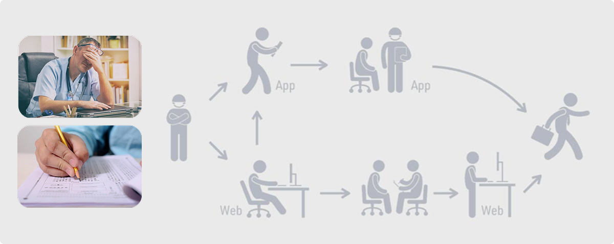
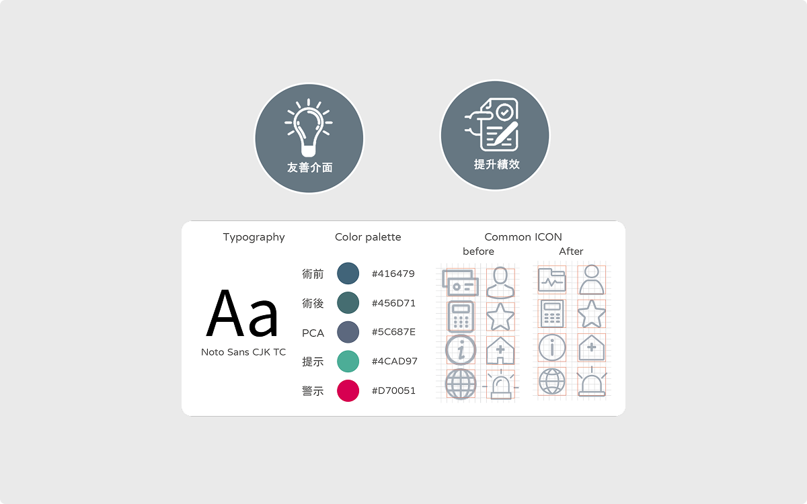
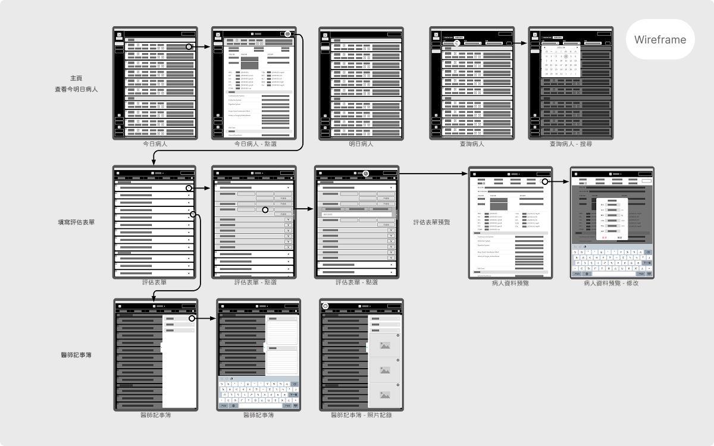
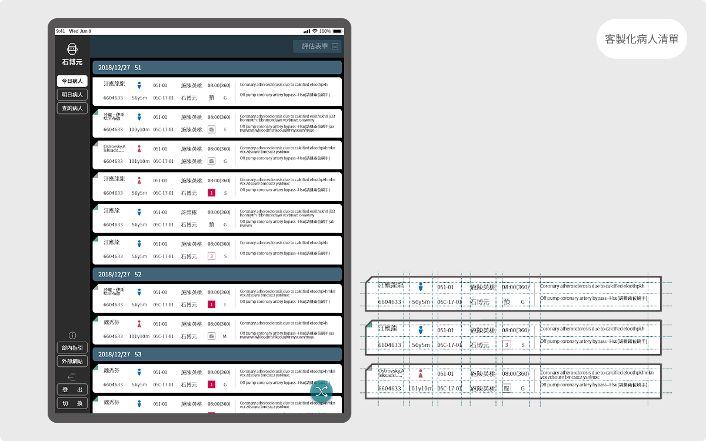
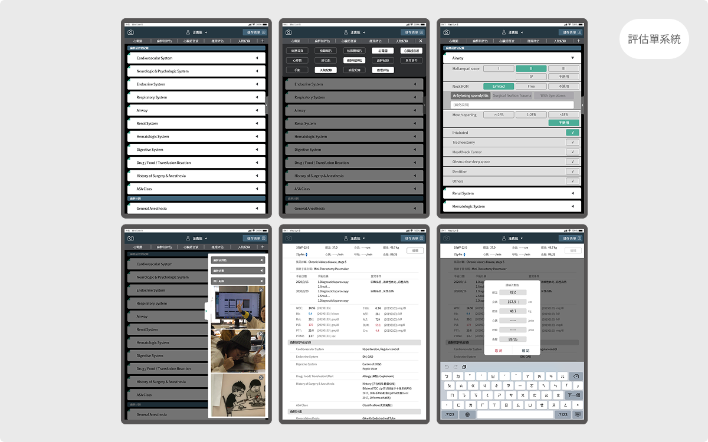
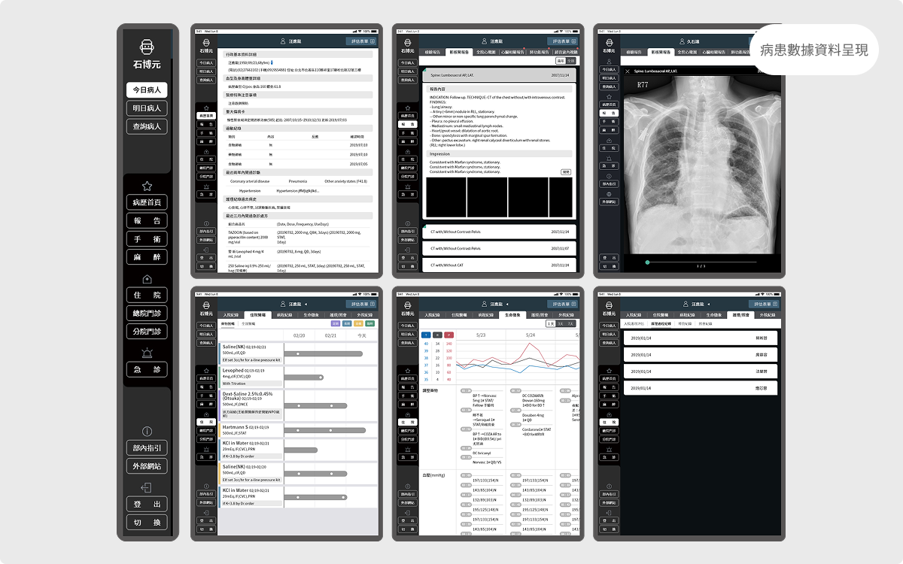
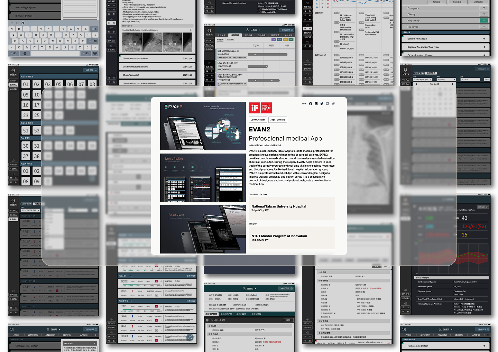

01
Clarity
重新定義內容層級，讓重要資訊更容易被看見。
2019~202101
此設計為台北科技大學與台大醫院麻醉部合作的產學。EVAN臺大醫院麻醉科電子表單系統是一款讓麻醉醫師、護理師提升工作效率，促進溝通的APP。主要將APP的邏輯與架構重新探討與整理，修改介面內容與不合理的操作，進行優化設計。
Background of the Problem
麻醉醫師在進行評估時，需在短時間內快速瀏覽大量病患資料，但一般的電子表單並不符合快速查閱與填寫的需求，因此開發一款讓麻醉醫師、護理師提升工作效率，促進溝通的APP。



UI Overview



觀察2021年11/25~11/26和1/25~1/26 Google Analytics開獎分享數據:
1.點擊開獎分享相關功能的人數成長7.63%。
2.開獎分享11/17上線，總分享點擊數成效成長高達246%，且越接近25號開獎期間成效越好。
3.分享短網址的點擊分享總計30,934次，點擊導下載網址總計4,145次，轉換率達13.43%。分享出去網址導下載成效跟上期相比點擊成長「2倍」 (iOS:Android=8:2)。
RESULTS & LEARNINGS
「我第一次使用就知道下一步該做什麼，
不需要再花時間找功能。」
— 使用者測試回饋
重新定義內容層級，讓重要資訊更容易被看見。
建立可重複使用的元件與版面規則。
透過清楚回饋與文案，降低操作不確定感。
IMPACT & METRICS
EVAN 在 2021 年正式上線後，除了提升麻醉前評估流程效率，也在文件完成率與異常事件控制上帶來明顯成效。
份 / 2021 上線一年累計
EVAN 上線一年內，共產生 45,165 份麻醉前評估單。
麻醉前評估單完成率高達 99.9%，顯示流程執行穩定且落地。
呼吸道與心血管異常事件明顯下降，反映流程與資訊呈現更清楚有效。
